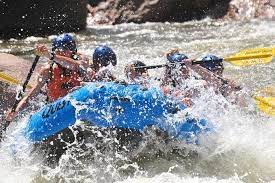
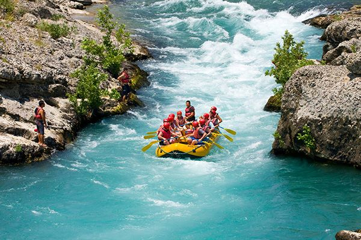
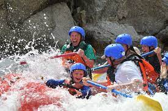

you arrive at the river's edge, the sun shining bright, and the sound of rushing water.

As you push off from the shore, the calm waters quickly give way to swiring currents and foamy waves.

The raft dips and rises, sending adrenaline coursing through your veins.
Trip
Description
Rapid water
White-water rafting is a recreational outdoor activity which uses an inflatable raft to navigate a river.